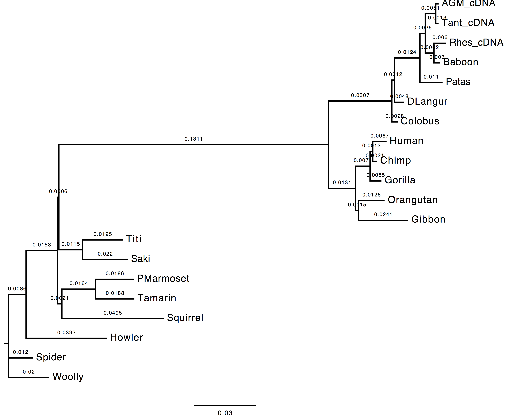

Tutorial 1: Inferring phylogenies using maximum likelihood
In this tutorial you will be guided in using PhyML and its extension, CodonPhyML, to solve common phylogenetic problems. For some of the following exercises there might be more than one single solution. Herewith I show you my solutions for the exercises prepared by Maria Anisimova
ML with DNA data (the primate DNA dataset)
Dataset file: primates-nt.phy
Exercise 1
GOAL: In this exercise you are asked to run PhyML twice in order to compare the effect of estimating nucleotide frequencies from the used dataset vs. optimising them with a maximum likelihood (ML) approach.
Execution
1. First run
- Nucleotide substitution model = HKY85 + Gamma
- Estimating transition/transversion ratio ( parameter of HKY85 model)
- Estimating alpha parameter (remember for gamma distributions used in phylogenetics)
- Estimating nucleotide frequencies with ML
Here is the list of the parameters to change from the PhyML menu:
[M] ................. Model of nucleotide substitution HKY85
[F] ................. Optimise equilibrium frequencies yes
[T] .................... Ts/tv ratio (fixed/estimated) estimated
[C] ........... Number of substitution rate categories 4
[G] ............. Gamma distributed rates across sites yes
[A] ... Gamma distribution parameter (fixed/estimated) estimated
2. Second run
- Nucleotide substitution model = HKY85 + Gamma
- Estimating transition/transversion ratio ( parameter of HKY85 model)
- Estimating alpha parameter (remember for gamma distributions used in phylogenetics)
- Estimating nucleotide frequencies empirically from the data
Here is the list of the parameters to change from the PhyML menu:
[M] ................. Model of nucleotide substitution HKY85
[F] ................. Optimise equilibrium frequencies no
[T] .................... Ts/tv ratio (fixed/estimated) estimated
[C] ........... Number of substitution rate categories 4
[G] ............. Gamma distributed rates across sites yes
[A] ... Gamma distribution parameter (fixed/estimated) estimated
Questions
- Do you see much difference in the tree?
The topology does not change, however we can observe a change in the computed branch lengths.
| Nt-frequencies optimised | Nt-frequencies estimated |
|---|---|
|  |
2. In the likelihood value (stat file)?
The likelihood value of the tree inferred using the nucleotide frequencies estimated empirically from the dataset is lower than the likelihood value of the tree inferred using the nucleotide frequencies estimated via ML. This is due to dataset dimensions (the number of the sequences used).
run 1: -6172.58045
run 2: -6173.49655
- Which option is best and why do you think so?
The best option in this case is to use the ML approach since the ML optimisation technique provides better estimates for the nucleotide frequencies, which, in turn, affect the likelihood of the inferred tree. This is due to the nucleotide frequencies which are used in the calculation of the likelihood of each site of the alignment (, where is the vector of the nucleotide frequencies and the rate matrix).
Exercise 2
GOAL: In this exercise you are asked to optimise the tree topology on the substitution parameters obtained using ML performing a tree search (i.e. NNI, SPR, TBR) on the initial tree topology.
Execution
1. Run
- Nucleotide substitution model = HKY85 + Gamma
- Estimating transition/transversion ratio ( parameter of HKY85 model)
- Estimating alpha parameter (remember for gamma distributions used in phylogenetics)
- Estimating nucleotide frequencies with ML
- No tree search (tree optimisation)
Here is the list of the parameters to change from the PhyML menu:
[M] ................. Model of nucleotide substitution HKY85
[F] ................. Optimise equilibrium frequencies yes
[T] .................... Ts/tv ratio (fixed/estimated) estimated
[C] ........... Number of substitution rate categories 4
[G] ............. Gamma distributed rates across sites yes
[A] ... Gamma distribution parameter (fixed/estimated) estimated
[O] ........................... Optimise tree topoLOGy no
Questions
- Compare the trees obtained with and without tree-search. What do you observe and why?
The topology inferred without tree search presents
| With tree-search | Without tree-search |
|---|---|
 |
- Compare the model estimates with and without tree-search. What do you observe and why?
- Compare the likelihood of the ML and NJ trees. What do you observe and why?
Exercise 3
Exercise 4
Exercise 5
Exercise 6
ML with protein data
With primate dataset
Exercise 1
Exercise 2
With protein data sets from Lerat et al. (2003)
Exercise 1
Exercise 2
References
Document last updated on 31.01.2016
© 2016 Lorenzo Gatti – Applied Computational Genomic Team (ACGT) @ Institute of Applied Simulations (ZHAW) | Wädenswil | Zürich